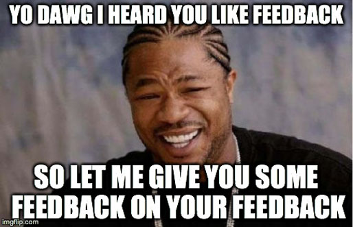

Pairing and Feedback at DBC
Dev Bootcamp is big on having students worked together with a partner, aka pairing, and giving and receiving feedback. The degree to which these learning methods are used is much greater than I've had in a school or environment. Every week we're expected to pair up 2 or 3 times with other students and work on a challenge together. These are always positive experiences for me. The best times I've had pairing are when I learn something new, when my pair learns something new, or we discover something together.
There are times when I struggle though, and start to get anxious to take a break from the session. This happens especially during pairing session with one of the DBC guides, where we're not supposed to look at the curriculum ahead of time. Without preparing before the challenge, I tend to have a hard time focusing and solving the problem. Also it's a little unnerving being watched. I prefer it when the guide is more vocal. These times are still good though, because I'm able to ask questions from DBC staff when I need, receiving extra guidance that I usually don't get during the week. It's also good because I get to see how other students approach work on the fly. I don't fully digest most of the challenge though until after the guided pairing session is over and I have a chance to work on it alone.
Feedback
Dev Bootcamp has a feedback system where we can give constructive complements and criticism to other students. The feedback I've received from other students has been encouraging. All of the feedback has been positive, with a few critical observations. I feel like I'm mostly being effective in my pairing sessions, and the constructive criticism is appreciated. Most of the issues reported are things I'm already aware of, but it's good to have it reiterated. I think it gives me an extra nudge to work on those weaknesses. In particular, sometimes I hold my tongue when something is bothering me, especially when I don't understand something after having it explained to me a second or third time. At that point I tend to just want to move on.
As for writing feedback to other students, at times I found it awkward and other times it was natural. The times when a pair and I had a lot of discoveries together, I felt like I had a lot to say. The times when our session was brief, or I didn't learn a lot of new things, I didn't have much new to say. Especially difficult for me is giving constructive feedback, because I tend to be very patient with others and don't feel a need to complain. Things that might be a slight bother to me are so minor that I hardly find them worth commenting on. I feel like I have to be actively looking for something to be critical of in order to even identify it and remember it by the time I'm ready submit feedback.
Overall, I'm happy to continue with the process laid out by DBC to help my learning. I think pairing is helpful for several reasons. It helps me connect with others in the program. I learn new tricks from others. I learn about teaching others and learning from others. It helps me review and solidify concepts that I'm working on. As for receiving feedback and incorporating it into my learning, I suppose most of it was just a confidence boost to know that I'm doing somethings right. As for the constructive criticism, I appreciate receiving it writing, but I think I prefer hearing the feedback from the person. Lately I've been trying to give my pair feedback before we end our session.